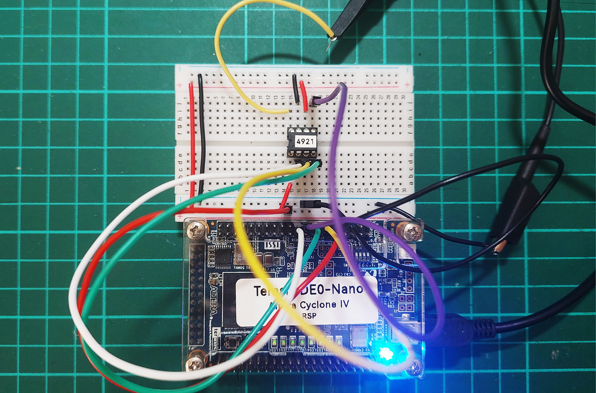
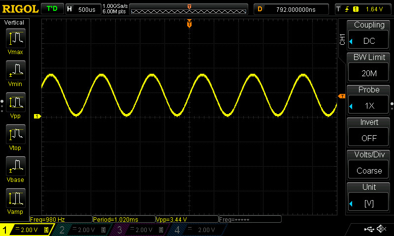
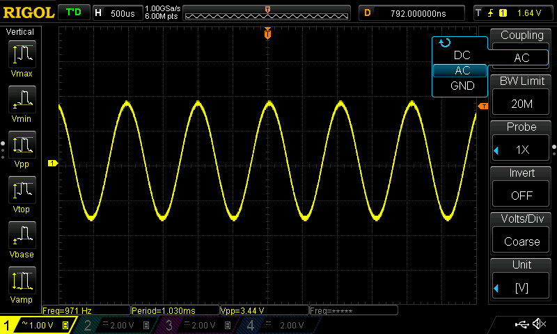
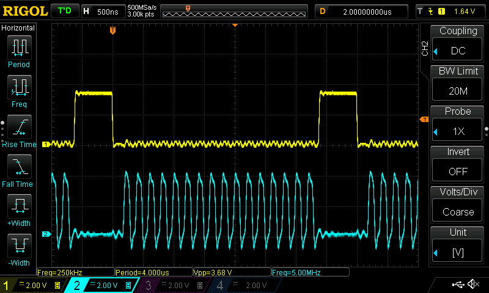
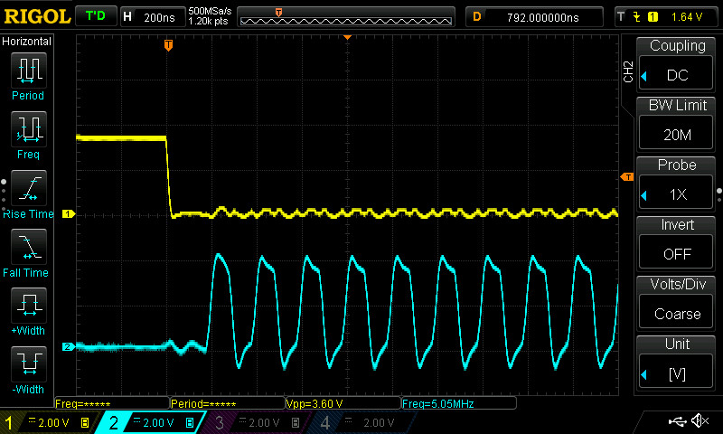
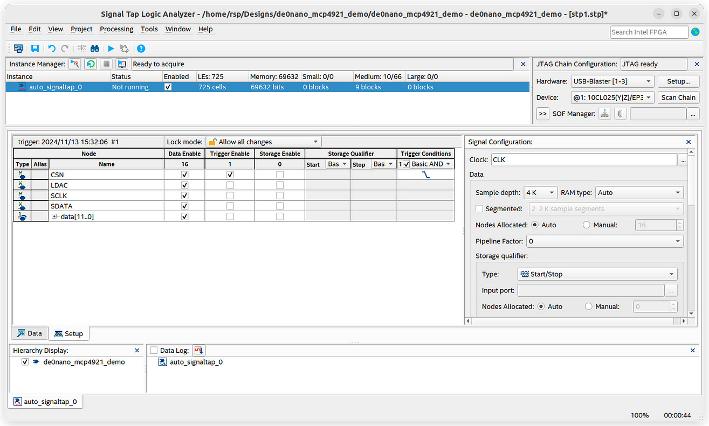
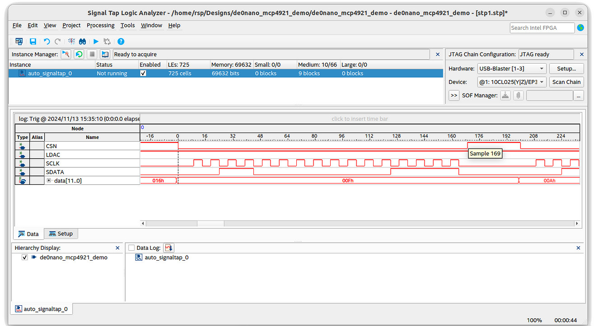
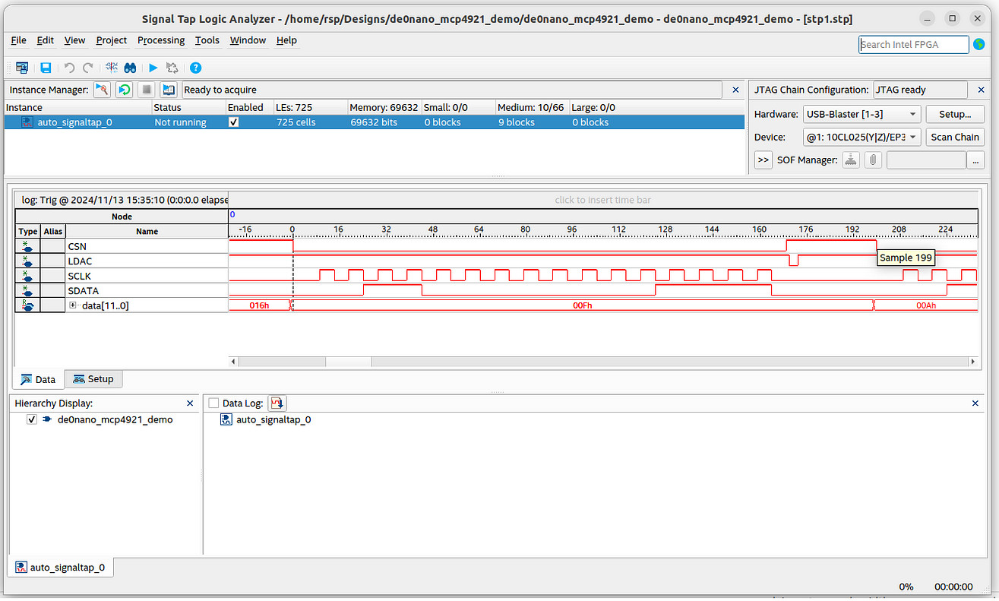

การออกแบบวงจรดิจิทัลสำหรับ FPGA เพื่อใช้งานไอซี MCP4921 SPI DAC#
Keywords: Digital Logic Design, VHDL, Intel / Altera FPGA, Quartus Prime, MCP4921 DAC, SPI
ความรู้และทักษะพื้นฐานที่เกี่ยวข้อง
- อิเล็กทรอนิกส์ (Electronics): การใช้งาน MCP4921 DAC การสื่อสารผ่านบัส SPI และการศึกษาเอกสาร Datasheet ของไอซี
- การออกแบบวงจรลอจิก (Logic Design): การออกแบบวงจรดิจิทัลโดยใช้ FSM (Finite-State Machine) และการใช้งาน Intel Cyclone IV FPGA
- การประมวลผลสัญญาณดิจิทัล: การสร้างสัญญาณแบบคาบ (เช่น สัญญาณไซน์) การบันทึกสัญญาณในชิป FPGA เพื่อการวิเคราะห์สัญญาณด้วย Signal Tap Logic Analyzer
- การวัด (Measurement): การใช้งานออสซิลโลสโคปเพื่อวัดสัญญาณดิจิทัล
- การเขียนโค้ดและการใช้ซอฟต์แวร์ (Software/Coding): การเขียนโค้ดด้วย VHDL การใช้งานซอฟต์แวร์ Intel Quartus Prime (Lite Edition)
▷ ไอซี MCP4921 SPI DAC#
MCP4921 ของบริษัท Microchip เป็นไอซีในประเภท DAC (Digital to Analog Converter) ทำหน้าที่แปลงข้อมูลดิจิทัลให้เป็นสัญญาณแอนะล็อก โดยมีเอาต์พุต 1 ช่อง
คุณสมบัติสำคัญของไอซี:
- เอาต์พุตของวงจร DAC จำนวน 1 ช่อง เป็นแบบ Rail-to-Rail Output (ให้สัญญาณได้เต็มช่วงแรงดัน)
- ความละเอียด (Resolution): สามารถแปลงข้อมูลดิจิทัล 12 บิตเป็นแรงดันแอนะล็อกได้.
- แรงดันไฟเลี้ยง (Voltage Supply): 2.7V ถึง 5.5V
- อินเทอร์เฟซด้วยบัส SPI
- รองรับ SPI Mode: (0,0) และ (1,1)
- ความถี่ SPI: สูงสุด 20 MHz
- มีขาสำหรับเชื่อมต่อแรงดันอ้างอิง (
VREF)- ต้องมีความเสถียรและไม่เกินแรงดัน
VDD - ปกติใช้
VREFเท่ากับVDD
- ต้องมีความเสถียรและไม่เกินแรงดัน
- เวลาตอบสนอง (Settling Time): 4.5 µs
- อัตราขยายที่เลือกได้ (Programmable Gain): 1x หรือ 2x (มีวงจรขยายสัญญาณในตัว)
- ไม่มีขา Shutdown (
/SHDN)

รูป: ไอซี MCP4921 และการใช้งานขาของไอซี
การส่งข้อมูลผ่าน SPI จะใช้ขา SDI (Serial Data Input)
ในการเลื่อนข้อมูล 16 บิตเข้าสู่รีจิสเตอร์ของไอซี
จังหวะของการส่งข้อมูลถูกควบคุมโดยสัญญาณ SCK (Serial Clock)
สัญญาณควบคุม /CS (Chip Select) ต้องเปลี่ยนจาก High เป็น Low เพื่อเริ่มต้นการส่งข้อมูล
หลังจากส่งคำสั่งและข้อมูลครบ 16 บิตแล้ว
ต้องสร้างพัลส์แบบ Low-Active ที่ขา /LDAC โดยมีความกว้างอย่างน้อย 100 ns
พัลส์นี้ต้องเกิดหลังจาก /CS เปลี่ยนจาก Low เป็น High อย่างน้อย 40 ns

รูป: การสื่อสารข้อมูลด้วยบัส SPI
▷ ตัวอย่างการเขียนโค้ด VHDL เพื่อทดลองใช้งาน#
โค้ด VHDL (mcp4921.vhd) เป็นตัวอย่างการสร้างวงจรดิจิทัล เพื่อรับข้อมูล DATA ขนาด 12 บิต
เมื่อสัญญาณอินพุต START เปลี่ยนสถานะลอจิกเป็น 1 จากนั้นจึงเริ่มกระบวนการส่งข้อมูล 16 บิต
ไปยังไอซี MCP4921 ในระหว่างนั้น สัญญาณเอาต์พุต BUSY มีสถานะลอจิก 1
การทำงานของวงจรนี้ เป็นการสร้างสัญญาณสำหรับไอซี MCP4921 ได้แก่
CSN, SCLK, SDATA และ LDAC
การทำงานของวงจร จะใช้สัญญาณ CLK เป็นตัวกำหนดจังหวะการทำงาน โดยเลือกใช้ความถี่ 50MHz
และสร้างสัญญาณ SCK ตามความถี่ 5MHz ในการส่งข้อมูลบิต
วงจรนี้มีสัญญาณอินพุต NRST สำหรับการรีเซตวงจร (Active-Low Asynchronous Reset)
library IEEE;
use IEEE.STD_LOGIC_1164.all;
use IEEE.NUMERIC_STD.all;
entity mcp4921 is
port (
CLK : in std_logic; -- 50 MHz system clock
NRST : in std_logic; -- Active-low asynchronous reset
-------------------------------------------
START : in std_logic;
DATA : in std_logic_vector(11 downto 0);
BUSY : buffer std_logic;
-------------------------------------------
CSN : out std_logic; -- Chip-Select
SCLK : out std_logic; -- Serial Clock
SDATA : out std_logic; -- Serial Data
LDAC : out std_logic -- Latch DAC register
-------------------------------------------
);
end mcp4921;
architecture behavioral of mcp4921 is
constant SPI_CLK_DIV : integer := 5; -- 50MH/(2*5) => 5MHz SCK freq.
constant DATA_WIDTH : integer := 16;
type state_type is (ST_IDLE,ST_START,ST_SCK_H,ST_SCK_L,ST_END,ST_LDAC);
signal state : state_type := ST_IDLE;
signal bit_cnt : integer range 0 to DATA_WIDTH := 0;
signal shift_en : std_logic := '0';
signal shift_reg : std_logic_vector(DATA_WIDTH-1 downto 0);
constant WAIT_CNT_MAX : integer := (4) - 1;
signal wait_cnt : integer range 0 to WAIT_CNT_MAX := 0;
begin
process (CLK, NRST)
variable count : integer range 0 to (SPI_CLK_DIV-1) := 0;
begin
if NRST = '0' then
count := 0;
shift_en <= '0';
elsif rising_edge(CLK) then
if count = (SPI_CLK_DIV-1) then
count := 0;
shift_en <= '1';
else
count := count + 1;
shift_en <= '0';
end if;
end if;
end process;
process (CLK, NRST)
begin
if NRST = '0' then
SCLK <= '0';
SDATA <= '0';
BUSY <= '0';
LDAC <= '1';
wait_cnt <= 0;
bit_cnt <= 0;
state <= ST_IDLE;
elsif rising_edge(CLK) then
case state is
when ST_IDLE =>
bit_cnt <= 0;
SCLK <= '0';
SDATA <= '0';
if START = '1' then
state <= ST_SCK_L;
shift_reg <= b"0011" & data;
BUSY <= '1';
end if;
when ST_SCK_L =>
if shift_en = '1' then
SCLK <= '0';
SDATA <= shift_reg(shift_reg'left);
if bit_cnt = DATA_WIDTH then
state <= ST_END;
else
state <= ST_SCK_H;
end if;
end if;
when ST_SCK_H =>
if shift_en = '1' then
SCLK <= '1';
shift_reg <= shift_reg(shift_reg'left-1 downto 0) & '0';
bit_cnt <= bit_cnt + 1;
state <= ST_SCK_L;
end if;
when ST_END =>
if shift_en = '1' then
SCLK <= '0';
BUSY <= '0';
wait_cnt <= WAIT_CNT_MAX;
state <= ST_LDAC;
end if;
when ST_LDAC =>
if wait_cnt = 0 then
LDAC <= '1';
state <= ST_IDLE;
else
wait_cnt <= wait_cnt - 1;
LDAC <= '0';
end if;
when others =>
state <= ST_IDLE;
end case;
end if;
end process;
CSN <= not BUSY;
end behavioral;
โค้ด VHDL ถัดไป (de0nano_mcp4921_demo.vhd) เป็นตัวอย่างการใช้งานวงจร
mcp4921.vhd เพื่อสาธิตการเขียนข้อมูลขนาด 12 บิต ตามลำดับ เพื่อสร้างสัญญาณเอาต์พุตรูปคลื่นไซน์
โดยให้มีแรงดันไฟเลี้ยงอยู่ในช่วง 0V ถึง 3.3V
ระยะเวลาในการเขียข้อมูลแต่ละค่าคือ 4us หรือ มีอัตราการเขียนข้อมูล 250kHz ข้อมูลที่นำมาเขียนได้จากอาร์เรย์ของค่าคงที่ขนาด 12 บิต สำหรับฟังก์ชันไซน์ และมีข้อมูล 256 ค่า ดังนั้นความถี่ของสัญญาณเอาต์พุต จะได้เท่ากับ 250kHz / 256 = 976.56Hz
library IEEE;
use IEEE.STD_LOGIC_1164.all;
use IEEE.NUMERIC_STD.all;
use IEEE.MATH_REAL.all;
entity de0nano_mcp4921_demo is
port (
CLK : in std_logic; -- 50 MHz system clock
NRST : in std_logic; -- Active-low asynchronous reset
CSN : out std_logic;
SCLK : out std_logic;
SDATA : out std_logic;
LDAC : out std_logic
);
end de0nano_mcp4921_demo;
architecture synth of de0nano_mcp4921_demo is
type state_type is (ST_IDLE, ST_START);
signal state : state_type := ST_IDLE;
constant BW : integer := 12; -- 12 bits for DAC output
constant M : integer := 8;
constant MAX_INDEX : integer := 2**M - 1;
signal start : std_logic := '0';
signal data : std_logic_vector(BW-1 downto 0) := (others => '0');
signal busy : std_logic;
subtype sample_t is std_logic_vector((BW-1) downto 0);
type sample_table_t is array(0 to MAX_INDEX) of sample_t;
function init_table return sample_table_t is
variable LUT : sample_table_t;
variable x : REAL;
begin
for i in 0 to MAX_INDEX loop
-- sinusoidal waveform (with DC offset)
x := (1.0 + SIN(2.0 * MATH_PI * real(i) / real(2**M)))/2.0;
LUT(i) := std_logic_vector(to_unsigned(integer(x*real(2**BW-1)),BW));
end loop;
return LUT;
end function;
-- Signal to index through LUT
signal lut_index : integer range 0 to (2**M - 1) := 0;
signal lut_table : sample_table_t := init_table;
constant COUNT_MAX : integer := (200) - 1;
signal count : integer range 0 to COUNT_MAX;
signal tick : std_logic;
begin
-- Instantiate mcp4921 component
mcp4921_inst : entity work.mcp4921
port map (
CLK => CLK,
NRST => NRST,
START => start,
DATA => data,
BUSY => busy,
CSN => CSN,
SCLK => SCLK,
SDATA => SDATA,
LDAC => LDAC
);
-- Clock divider process for tick generation
process (CLK, NRST)
begin
if NRST = '0' then
tick <= '0';
count <= 0;
elsif rising_edge(CLK) then
if count = COUNT_MAX then
count <= 0;
tick <= '1';
else
count <= count + 1;
tick <= '0';
end if;
end if;
end process;
-- Sine wave generator process
process (CLK, NRST)
begin
if NRST = '0' then
lut_index <= 0;
start <= '0';
state <= ST_IDLE;
elsif rising_edge(CLK) then
case state is
when ST_IDLE =>
start <= '0';
if tick = '1' and busy = '0' then
-- Set data from LUT and trigger start signal
data <= lut_table(lut_index);
start <= '1';
state <= ST_START;
end if;
when ST_START =>
if busy = '1' then
start <= '0';
-- Increment LUT index for next sine value
if lut_index = MAX_INDEX then
lut_index <= 0; -- reset to beginning of LUT
else
lut_index <= lut_index + 1;
end if;
state <= ST_IDLE;
end if;
when others =>
state <= ST_IDLE;
end case;
end if;
end process;
end synth;
ตัวอย่างการวัดสัญญาณด้วยออสซิลโลสโคป

รูป: การต่อวงจรทดลองไอซี MCP4921 บนเบรดบอร์ด

รูป: สัญญาณเอาต์พุตรูปคลื่นไซน์ (โหมดแสดงผล DC Coupling)

รูป: สัญญาณเอาต์พุตรูปคลื่นไซน์ (โหมดแสดงผล AC Coupling)


รรูป: สัญญาณบัส SPI (CH1: CSN และ CH2: SCK)
ผลการวัดสัญญาณแสดงให้เห็นว่า ความถี่ของ SCK เท่ากับ 5MHz และมีอัตราการอัปเดตค่าเอาต์พุตของ DAC เท่ากับ 250kHz ความถี่ของไซน์ ได้ประมาณ 980Hz
ถัดไปเป็นตัวอย่างการใช้ Signal Tap Logic Analyzer IP Core เพื่อบันทึกค่าของสัญญาณที่ได้เลือกมาวิเคราะห์และแสดงผลเป็นรูปคลื่นสัญญาณ มีทั้งสัญญาณดิจิทัลที่ขาเอาต์พุต และสัญญญาณภายในของวงจร

รูป: ตัวอย่างการตั้งค่าใช้งาน Signal Tap Logic Analyzer


รูป: สัญญาณดิจิทัลที่ได้จากการทำงานของ Signal Tap Logic Analyzer
ระยะเวลาระหว่างขอบขาลงและขอบขาขึ้นของสัญญาณ /CS ห่างกัน 170 ไซเคิล (170 * 20ns = 3.4us)
และระยะเวลาระหว่างขอบขาลงของสัญญาณ /CS ถัดไปสองครั้ง ห่างกัน 200 ไซเคิล (200 * 20ns = 4us)
▷ กล่าวสรุป#
บทความนี้ได้นำเสนอตัวอย่างการออกแบบวงจรดิจิทัลสำหรับ FPGA เพื่อทดลองใช้งานโมดูล MCP4921 12-bit SPI DAC เชื่อมต่อด้วยบัส SPI และสร้างสัญญาณเอาต์พุต-แอนะล็อก 1 ช่อง
บทความที่เกี่ยวข้อง
- การใช้งานโมดูล MCP4921 DAC (Digital-to-Analog Converter) และเขียนโค้ดด้วย Arduino สำหรับบอร์ด Uno R4 Wi-Fi และ ESP32
This work is licensed under a Creative Commons Attribution-ShareAlike 4.0 International License.
Created: 2024-10-17 | Last Updated: 2024-11-17